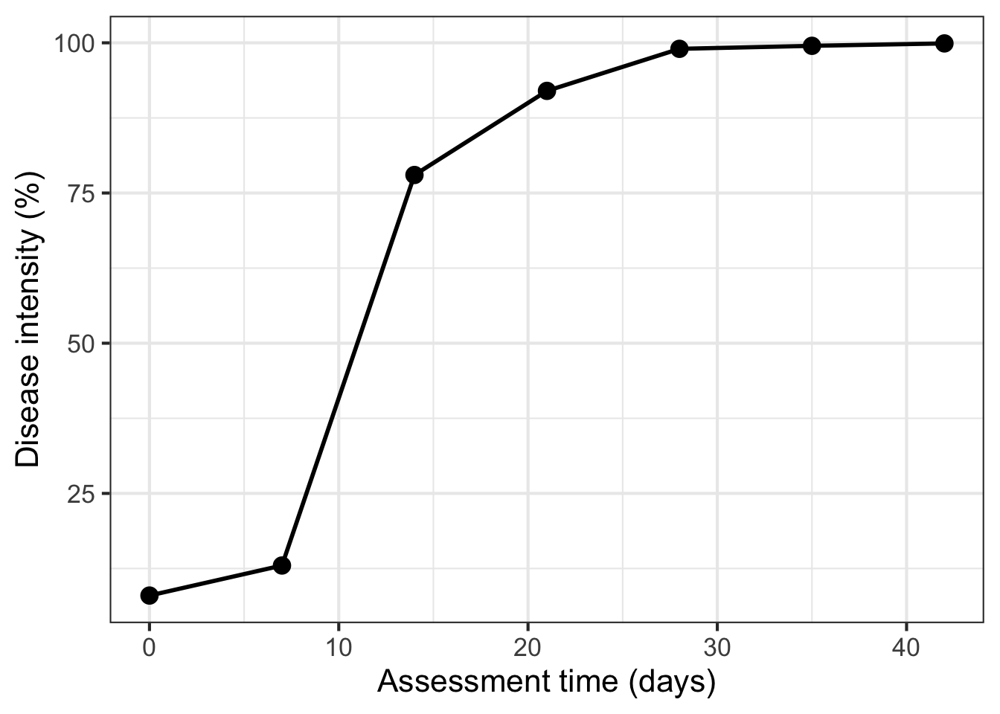
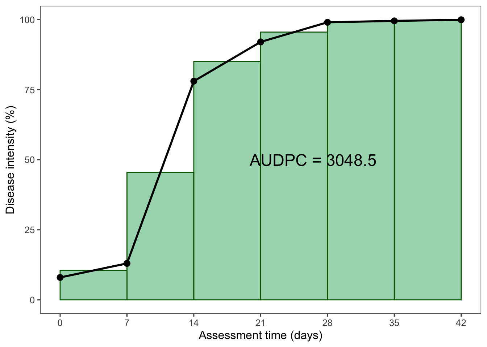

library(tidyverse) # essential packages
library(cowplot) # for themes
theme_set(theme_bw(base_size = 16)) # set global theme5 Disease progress curves
This is a work in progress that is currently undergoing heavy technical editing and copy-editing
5.1 Disease progress curves
A key understanding of the epidemics relates to the knowledge of rates and patterns. Epidemics can be viewed as dynamic systems that change their state as time goes. The first and simplest way to characterize such changes in time is to produce a graphical plot called disease progress curve (DPC). This curve can be obtained as long as the intensity of the disease (y) in the host population is assessed sequentially in time (t).
A DPC summarizes the interaction of the three main components of the disease triangle occurring during the epidemic. The curves can vary greatly in shape according to variations in each of the components, in particular due to management practices that alter the course of the epidemics and for which the goal is to stop disease increase. We can create a dataframe in R for a single DPC and make a plot using ggplot. By convention we use t for time and y for disease intensity, expressed in percentage (0 to 100%).
Firstly, let’s load the essential R packages and set up the environment.
There are several ways to create a dataframe in R. I like to use the tribble function as below. The entered data will be assigned to a dataframe called dpc.
dpc <-
tribble(
~t, ~y,
0, 8,
7, 13,
14, 78,
21, 92,
28, 99,
35, 99.5,
42, 99.9,
)Now the plot
dpc |>
ggplot(aes(t, y)) +
geom_line(size = 1)+
geom_point(size = 4, shape = 16)+
labs(x = "Assessment time (days)",
y = "Disease intensity (%)")
5.2 Curve descriptors: AUDPC
The depiction and analysis of disease progress curves can provide useful information for gaining understanding of the underlying epidemic process. The curves are extensively used to evaluate how disease control measures affect epidemics. When characterizing DPCs, a researcher may be interested in describing and comparing epidemics that result from different treatments, or simply in their variations as affected by changes in environment, host or pathogen.
The precision and complexity of the analysis of progress curve data depends on the objective of the study. In general, the goal is to synthesize similarities and different among epidemics based on common descriptors of the disease progress curves. For example, the simple appraisal of the disease intensity at any time during the course of the epidemic should be sufficient for certain situations. Furthermore, a few descriptors can be extracted including the epidemic duration, the initial and maximum disease, and the area under the disease progress curve (AUDPC).
The AUDPC summarizes the “total measure of disease stress” and is largely used to compare epidemics (Jeger and Viljanen-Rollinson 2001). The most common approach to calculate AUDPC is the trapezoidal method, which splits the disease progress curves into a series of rectangles, calculating the area of each of them and then summing the areas. Let’s extend the plot code to show those rectangles using the annotate function.
library(ggthemes)
Attaching package: 'ggthemes'The following object is masked from 'package:cowplot':
theme_mapdpc1 <- dpc |>
ggplot(aes(t, y)) +
labs(x = "Assessment time (days)",
y = "Disease intensity (%)")+
geom_area(alpha = 0.5, fill = "MediumSeaGreen")+
geom_line(size = 1)+
geom_point(size = 3, shape = 16)+
theme_few()+
scale_x_continuous(breaks = c(0, 7, 14, 21, 28, 35, 42))
dpc1
dpc2 <- dpc |>
ggplot(aes(t, y)) +
labs(x = "Assessment time (days)",
y = "Disease intensity (%)")+
annotate("rect", xmin = dpc$t[1], xmax = dpc$t[2],
ymin = 0, ymax = (dpc$y[1]+ dpc$y[2])/2,
color = "darkgreen", fill = "MediumSeaGreen", alpha = 0.5)+
annotate("rect", xmin = dpc$t[2], xmax = dpc$t[3],
ymin = 0, ymax = (dpc$y[2]+ dpc$y[3])/2,
color = "darkgreen", fill = "MediumSeaGreen", alpha = 0.5)+
annotate("rect", xmin = dpc$t[3], xmax = dpc$t[4],
ymin = 0, ymax = (dpc$y[3]+ dpc$y[4])/2,
color = "darkgreen",, fill = "MediumSeaGreen", alpha = 0.5)+
annotate("rect", xmin = dpc$t[4], xmax = dpc$t[5],
ymin = 0, ymax = (dpc$y[4]+ dpc$y[5])/2,
color = "darkgreen", fill = "MediumSeaGreen", alpha = 0.5)+
annotate("rect", xmin = dpc$t[5], xmax = dpc$t[6],
ymin = 0, ymax = (dpc$y[5]+ dpc$y[6])/2,
color = "darkgreen",fill = "MediumSeaGreen", alpha = 0.5)+
annotate("rect", xmin = dpc$t[6], xmax = dpc$t[7],
ymin = 0, ymax = (dpc$y[6]+ dpc$y[7])/2,
color = "darkgreen", fill = "MediumSeaGreen", alpha = 0.5)+
geom_line(size = 1)+
geom_point(size = 3, shape = 16)+
annotate(geom = "text", x = 26.5, y = 50,
label = "AUDPC = 3048.5", size = 6)+
theme_few()+
scale_x_continuous(breaks = c(0, 7, 14, 21, 28, 35, 42))
dpc2
In R, we can obtain the AUDPC for the DPC we created earlier using the AUDPC function offered by the epifitter package. Because we are using the percent data, we need to set the argument y_proportion = FALSE. The function returns the absolute AUDPC. If one is interested in relative AUDPC, the argument type should be set to "relative". There is also the alternative to AUDPC, the area under the disease progress stairs (AUDPS) (Simko and Piepho 2012).
library(epifitter)
AUDPC(dpc$t, dpc$y,
y_proportion = FALSE)[1] 3048.15# The relative AUDPC
AUDPC(dpc$t, dpc$y,
y_proportion = FALSE,
type = "relative")[1] 0.72575# To calculate AUDPS, the alternative to AUDPC
AUDPS(dpc$t, dpc$y,
y_proportion = FALSE)[1] 3425.8